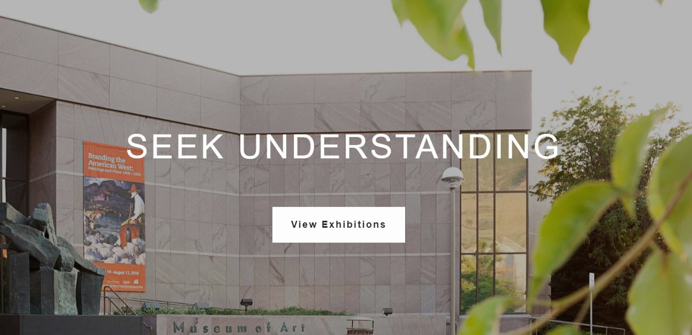

Arts & Museums
Concerts and Performances
Life Science Museum
Museum of Art
Museum of Paleontology
Museum of Peoples and Cultures
BYU Arts
BYU Arts is the producing and presenting organization for the Brigham Young University College of Fine Arts and Communications. The Division of Arts Production provides marketing and production services for the more than 500 annual performances and events sponsored by the Department of Dance, Department of Theatre Arts, Department of The School of Music, and BRAVO! Professional Performing Arts Series. Performances are staged in the Harris Fine Arts Center, Marriott Center, and Richards Building. The division also supports the university's performing groups in other venues on campus as well as on tour throughout Utah, the United States, and the world.
Contact Information
Bean Education
(801) 422-6698
beanmuseum@gmail.com
CONTACT
- Brigham Young University
- Provo, UT 84602
- 801-422-4636
RESOURCES
- A-Z Index
- BYU Mobile App
- Counseling & Career Center
- Helping Distressed Students
- Library
- Office Of IT
- Title IX
- University Police&Parking
OTHER CES SCHOOLS
- BYU-Hawaii
- BYU-Idaho
- BYU-Pathway Worldwide
- LDS Business College
CONNECT
- BYU Alumni
- BYU Athletics
- BYU News
- BYU Store
- BYUtv
Provo, UT 84602, USA | 801-422-4636 | © 2020 All Rights Reserved